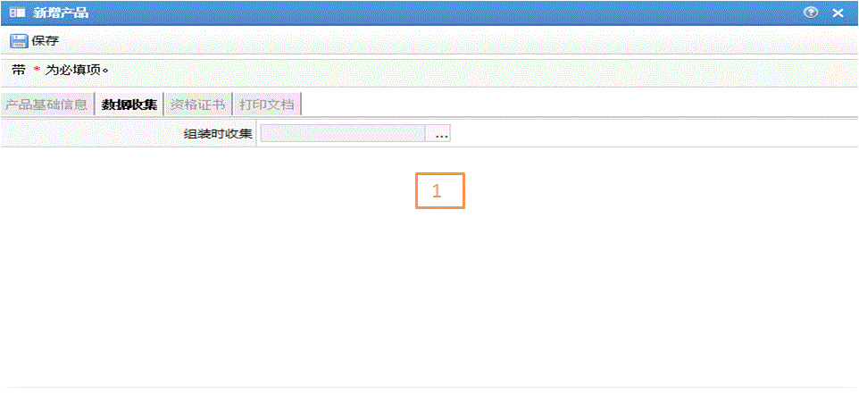
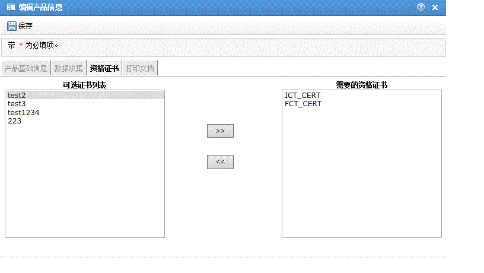
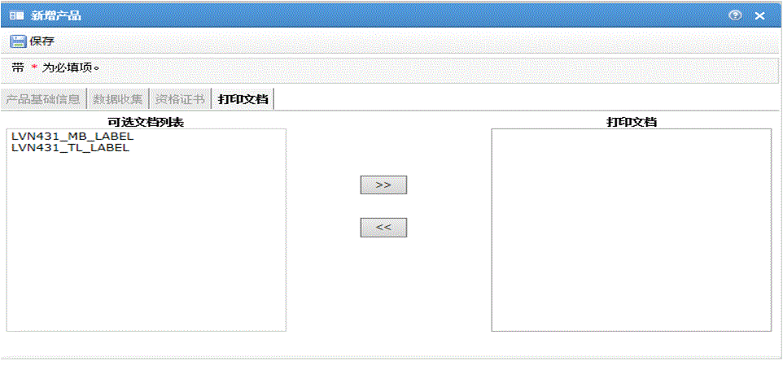
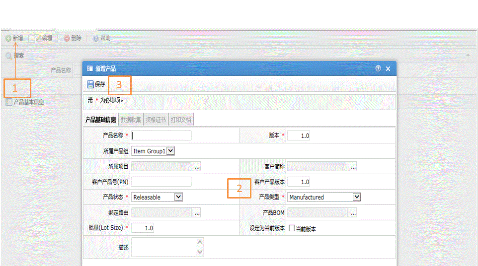

| 字段名 | 描述 |
| 产品名称 | 产品名称 |
| 版本 | 产品版本 |
| 所属产品组 | 所在的产品组 |
| 所属项目 | 所在项目 |
| 客户简称 | 客户简称 |
| 客户产品号(PN) | 客户产品号(PN) |
| 客户产品版本 | 客户产品版本 |
| 产品状态 | 产品状态: 1、Releasable（可用） 2、Frozen（冻结） 3、Obsolete（过期） 4、Hold(保留) 5、New（新建） 6、Hold_Consec_NC（保留连续 NC） -不允许操作员和机器处理记录了连续不合格项的 SFC 编号 7、Hold_SPC_Viol （保留SPC 违规） -不允许操作员和机器处理含 SPC 违规的 SFC 编号 8、Hold_SPC_Warn（保留 SPC 警告） -不允许操作员和机器处理含 SPC 警告的 SFC 编号 9、Hold_Yiel |
| 产品类型 | 产品类型： 1、Manufactured（制造） 2、Purchased（采购） 3、Manufactured_Purchased（制造-采购） |
| 绑定路由 | 产品绑定路由 |
| 产品BOM | 产品关联bom |
| 批量(Lot Size) | 批次数量大小 |
| 设定为当前版本 | 指定为当前使用版本 |
| 描述 | 产品的描述 |



